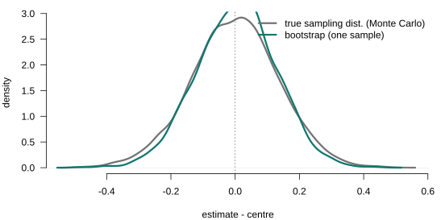

Resampling: The Bootstrap and Monte Carlo
Lecture 8
0.1 Where we are
Where this lecture sits
DGPIdentificationEstimationAsymptoticsInference
Computation
Asymptotic theory (Lecture 5) gave us one approximation to the sampling distribution of an estimator: \(\sqrt{n}\,(\hat{\theta}-\theta)\dto\Normal(0,V)\). It is an analytic approximation, exact only as \(n\to\infty\). This lecture builds a second approximation — a computational one, drawn straight from the data by resampling — and asks when each one helps.
The two approximations answer the same question by opposite routes. Monte Carlo lets us study estimators in a world whose truth we chose, so we can check whether the asymptotic formula is any good at our sample size. The bootstrap turns that idea back on real data: not knowing the population, we treat the sample as if it were the population and let the computer trace out the sampling distribution.
Why the two are complements, not rivals. They target the same object — the sampling distribution of \(\hat{\theta}\) — and neither replaces the other. First, the bootstrap’s validity is an asymptotic theorem: “the bootstrap works” means its distribution converges to the same limit as the true one, so we trust it because asymptotic theory says when it is consistent — and it fails exactly where regularity fails. Second, when the statistic is asymptotically pivotal (studentized), the bootstrap refines the first-order normal — coverage error \(O(n^{-1})\) rather than \(O(n^{-1/2})\) — so it improves on the very approximation it rests on. Third, a division of labour: asymptotics supplies the formula and the insight (the limit, the sandwich variance, why an estimator is consistent), resampling supplies a finite-sample picture and handles variances hard to derive, and Monte Carlo referees — checking whether the normal approximation is good enough at our \(n\). Concretely: the sandwich variance (Lecture 5) is the formula, the wild cluster bootstrap (Lecture 7) is the finite-sample fix — both aimed at the same distribution, the second rescuing the first where its normal reference is poor.
The object we never observe
Everything in Lectures 4–6 — unbiasedness, the sandwich variance, the normal limit, confidence intervals — is a statement about this unobserved distribution. Asymptotics describes its limit shape; resampling reconstructs a finite-sample picture of it. Keeping the target (the sampling distribution) in view is what makes both methods make sense.
1 Part I · Monte Carlo
1.1 The sampling distribution, made visible
Monte Carlo: design a DGP, repeat, measure
Definition 1 (Monte Carlo) Choose a data-generating process with known parameters, draw a sample from it, compute the estimator, and repeat \(R\) times. The histogram of the \(R\) estimates is the sampling distribution — exact up to simulation error, because you set the truth.
Seeing the sampling distribution
Set the truth (\(\beta=1\)), draw many samples, and plot the slope estimates: the sampling distribution appears, centres on \(\beta\), and tightens as \(n\) grows — consistency, made visible.
Both tighten — only one on the truth
Both DGPs have true slope \(\beta=1\); concentrating as \(n\) grows is not the same as being right.

What Monte Carlo answers
Under the Hood—Seeds, reproducibility, and how many replications
Fix the RNG seed so results reproduce exactly. Simulation error in a mean shrinks like \(1/\sqrt{R}\): a few thousand replications pin down a bias, but tail quantities (coverage, critical values) need many more. Always report \(R\) and the seed.
2 Part II · The jackknife
2.1 Leave one out
The simplest resampling
Before random resamples, the oldest resampling idea: systematically leave out one observation at a time.
Definition 2 (The jackknife) For each \(i=1,\dots,n\), let \(\hat\theta_{(-i)}\) be the estimator recomputed on the sample with observation \(i\) deleted. The \(n\) leave-one-out estimates \(\{\hat\theta_{(-i)}\}\) measure how much each observation moves \(\hat\theta\) — a deterministic, \(n\)-fold resampling (no randomness, no seed).
2.2 The jackknife variance
Measuring spread by leaving out
Theorem 1 (Jackknife variance) The jackknife estimate of the variance of \(\hat\theta\) is the (scaled) spread of the leave-one-out estimates, \[\widehat{\Var}_{\text{jack}}=\frac{n-1}{n}\sum_{i=1}^{n}\big(\hat\theta_{(-i)}-\bar\theta\big)^2, \qquad \bar\theta=\frac1n\sum_{i}\hat\theta_{(-i)}.\] No analytic variance formula is needed — like the bootstrap SE, but deterministic.
Each \(\hat\theta_{(-i)}\) differs from \(\hat\theta\) only slightly (one point out of \(n\)), so the raw spread of the leave-one-out estimates is tiny; the \((n-1)\) factor inflates it to the right order. The jackknife variance is consistent for the asymptotic variance under the same smoothness the bootstrap needs — and fails in the same non-smooth cases (e.g. the median), which is why it is used mainly for smooth estimators such as regression coefficients.
2.3 The jackknife is robust
It reproduces HC3
For OLS there is no need to refit \(n\) times — the leave-one-out coefficient has a closed form through the leverage \(h_{ii}=\mathbf{x}_i'(\bX'\bX)^{-1}\mathbf{x}_i\): \[\bb_{(-i)}=\bb-\frac{(\bX'\bX)^{-1}\mathbf{x}_i\,\hat e_i}{1-h_{ii}}.\]
On the Board
Substituting into \(\widehat{\Var}_{\text{jack}}\) gives — up to the \((n-1)/n\) factor — the HC3 robust variance, \[\widehat{\Var}_{\text{HC3}}[\bb]=(\bX'\bX)^{-1}\Big[\textstyle\sum_i \dfrac{\hat e_i^2}{(1-h_{ii})^2}\,\mathbf{x}_i\mathbf{x}_i'\Big](\bX'\bX)^{-1}.\] The jackknife of OLS is the heteroskedasticity-robust sandwich — derived by resampling, not assumed.
The derivation. Deleting observation \(i\), \(\bb_{(-i)}=(\bX'\bX-\mathbf{x}_i\mathbf{x}_i')^{-1}(\bX'\bY-\mathbf{x}_i y_i)\); the Sherman–Morrison rank-one update gives the closed form above, with deletion \(\mathbf{d}_i:=\bb-\bb_{(-i)}=(\bX'\bX)^{-1}\mathbf{x}_i\hat e_i/(1-h_{ii})\). The jackknife variance \(\widehat{\Var}_{\text{jack}}=\tfrac{n-1}{n}\sum_i(\bb_{(-i)}-\bar{\bb})(\bb_{(-i)}-\bar{\bb})'\), dropping the \(O(1/n)\) mean-correction, equals \(\tfrac{n-1}{n}\sum_i\mathbf{d}_i\mathbf{d}_i'\), and \[\sum_i\mathbf{d}_i\mathbf{d}_i'=(\bX'\bX)^{-1}\Big[\sum_i\frac{\hat e_i^2}{(1-h_{ii})^2}\mathbf{x}_i\mathbf{x}_i'\Big](\bX'\bX)^{-1},\] whose meat is exactly HC3 — so \(\widehat{\Var}_{\text{jack}}\approx\tfrac{n-1}{n}\widehat{\Var}_{\text{HC3}}\). The leverage weight \(1/(1-h_{ii})^2\) upweights high-leverage points, whose residuals are artificially small (\(\Var(\hat e_i)=\sigma^2(1-h_{ii})\)); this is why HC3 is the small-sample-best HC variant, and why the analytic sandwich (Lecture 5) and the resampling jackknife coincide. The delete-cluster jackknife is the same construction with whole clusters in place of single observations.
Connection—Back to Lecture 7: the delete-cluster jackknife
Delete one whole cluster at a time: the delete-cluster jackknife is a formula-free, few-clusters-safe alternative to the CRVE. Delete-one-obs \(\approx\) HC3; delete-one-cluster \(\approx\) cluster-robust.
3 Part III · The bootstrap
3.1 Resampling the data itself
The plug-in principle
Monte Carlo needs the true distribution \(F\). On real data we do not know it — so we replace it by the one distribution we can see.
Definition 3 (The plug-in principle) The sampling distribution depends on the unknown population \(F\). Replace \(F\) by the empirical distribution \(\hat{F}\) (mass \(1/n\) on each observed point) and compute everything in the bootstrap world. Sampling from \(\hat{F}\) is exactly sampling with replacement from the data.
Researcher's Toolbox—The bootstrap in one line
Treat the sample as the population; draw new samples from it; the variation of \(\hat{\theta}\) across those draws estimates its true sampling variation.
The plug-in is the whole idea: \(\hat{F}\) is a consistent estimate of \(F\), so a statistic’s behaviour under \(\hat{F}\) approximates its behaviour under \(F\) — the better, the larger \(n\). The bootstrap is Monte Carlo with \(\hat{F}\) in place of \(F\): we cannot repeat the experiment on new populations, but we can repeat it on resamples of the one we have.
Three flavours, one idea
The jackknife (Part II) resampled deterministically; the bootstrap resamples at random from \(\hat{F}\). Three versions — the same plug-in, differing only in what they resample:
The nonparametric (pairs) bootstrap
Resample whole observations \((y_i,\mathbf{x}_i)\) — the data straight from \(\hat F\), no model imposed.
The residual bootstrap
Resample the residuals, keeping the regressors \(\mathbf{X}\) fixed.
The wild bootstrap
Keep each residual with its own observation — only flip its sign at random.
Connection—Back to Lecture 7: the wild cluster bootstrap
For clustered data, draw one weight \(v_c=\pm1\) per cluster and apply it to the whole residual vector \(\hat{\beps}_c\). This preserves within-cluster dependence and is the reliable fix for the few-clusters problem we left open in Lecture 7 — resampling clusters, not observations.
4 Part IV · Bootstrap inference
4.1 From resamples to standard errors and intervals
Bootstrap standard errors
Theorem 2 (Bootstrap standard error) The bootstrap standard error of \(\hat{\theta}\) is the standard deviation of \(\hat{\theta}^{*}\) across the \(B\) resamples, \[\widehat{\mathrm{se}}_{\text{boot}}=\sqrt{\frac{1}{B-1}\sum_{b=1}^{B}\big(\hat{\theta}^{*}_b-\bar{\theta}^{*}\big)^2}, \qquad \bar{\theta}^{*}=\frac1B\sum_b \hat{\theta}^{*}_b.\]
Where the delta method hurts
In a wage–experience regression \(y=b_0+b_1\,\mathrm{exp}+b_2\,\mathrm{exp}^2+\cdots\), the experience that maximises earnings is the turning point \(x^{*}=-b_1/(2b_2)\) — a nonlinear function of two estimates.
Explicitly, \(\widehat{\Var}(x^{*})\approx\dfrac{\widehat{\Var}(b_1)}{4b_2^{2}}+\dfrac{b_1^{2}\,\widehat{\Var}(b_2)}{4b_2^{4}}-\dfrac{b_1\,\widehat{\Cov}(b_1,b_2)}{2b_2^{3}}\). Every term needs a derivative and an entry of the covariance matrix; for a messier functional — a ratio of marginal effects, an elasticity averaged over the sample — the algebra compounds, while the bootstrap code is unchanged. That is the practical reason resampling is the default for standard errors of complicated functionals of \(\bb\).
Confidence intervals, briefly
The \(B\) resampled estimates \(\{\hat\theta^{*}_b\}\) trace out the sampling distribution — so its quantiles are the interval, read off directly.
How many replications?
A standard error is a central quantity and settles early; a quantile lives in the tail and needs more resamples to pin down.
4.2 Seeing it · the resampling laboratory
The bootstrap finds the sampling distribution
One sample, resampled \(B\) times, reproduces the sampling distribution we could otherwise know only by drawing many fresh samples. Because we set the DGP, we can draw both and compare:

5 Part V · What the bootstrap does and does not do
5.1 The limits of resampling
It complements — it does not replace — asymptotics
The Four Questions—What the bootstrap does and does not fix
- It does approximate the sampling distribution in finite samples, handle heteroskedasticity (wild) and clustering (wild cluster), and can refine the asymptotic approximation.
- It does not fix inconsistency — resampling a biased or inconsistent estimator faithfully reproduces its bias. Garbage in, garbage out.
- It does not rescue weak instruments or other non-regular problems (a parameter on a boundary, a non-smooth functional), where the standard bootstrap can fail.
- It is only as good as the dependence it reproduces: resample independent draws from dependent data and you understate the uncertainty.
The bootstrap’s authority comes from the plug-in, and the plug-in inherits the estimator’s virtues and vices. If \(\hat{\theta}\) is consistent and asymptotically normal, the bootstrap works and often improves on the normal approximation. If identification fails, no amount of resampling manufactures it. The bootstrap is a tool for inference, not for identification.
Connection—Where this returns
Bootstrap and Monte Carlo come back for weak instruments (Lecture 11), GMM (Lecture 12), and finite-sample MLE inference (Lectures 13–14). The honest limits stated here are what make those later uses defensible.
6 Summary
What to take away
- The sampling distribution is the target; asymptotics approximates it with a formula, resampling with simulation.
- Monte Carlo studies estimators when you know the truth; the bootstrap replaces the unknown \(F\) by the data, \(F\to\hat{F}\).
- Match the scheme: pairs/wild for heteroskedasticity, wild cluster for clustering, residual only if i.i.d.
- Report a bootstrap standard error or a percentile interval; fix the seed and \(B\).
- It complements asymptotics — it does not fix inconsistency, weak instruments, or non-regular cases.
In the Literature—Reading
Hansen, Econometrics, ch. 10; Greene, ch. 15.